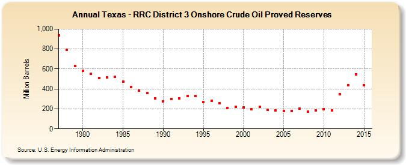

|
|||||
|  | |||||
| Texas - RRC District 3 Onshore Crude Oil Proved Reserves (Million Barrels) | |||||
| Decade | Year-0 | Year-1 | Year-2 | Year-3 | Year-4 | Year-5 | Year-6 | Year-7 | Year-8 | Year-9 |
|---|---|---|---|---|---|---|---|---|---|---|
| 1970's | 937 | 794 | 630 | |||||||
| 1980's | 581 | 552 | 509 | 517 | 522 | 471 | 420 | 386 | 360 | 307 |
| 1990's | 275 | 300 | 304 | 327 | 330 | 267 | 281 | 259 | 211 | 221 |
| 2000's | 213 | 195 | 218 | 190 | 185 | 179 | 180 | 200 | 170 | 183 |
| 2010's | 197 | 185 | 347 | 437 | 546 | 436 |
| - = No Data Reported; -- = Not Applicable; NA = Not Available; W = Withheld to avoid disclosure of individual company data. |
| Release Date: 12/14/2016 |
| Next Release Date: 11/30/2017 |